スナックRIZUM ／ 動画プレビュー シーン一覧（パターン3）
パターン3をご確認ください。修正のご依頼は、シーン番号（例：S-S03）でお知らせいただくとスムーズです。
S-S06のテロップを変えてほしいS-S12の尺を伸ばしてほしい「シーン番号」でお知らせください。

画像をクリックするとYouTubeで再生されます（約64秒）。
パターン3 シーン一覧（全18シーン）
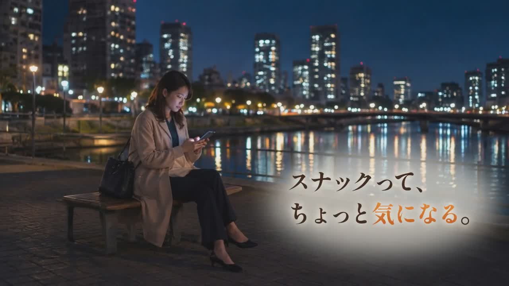
夜の河川敷で佇む女性
夜のリバーサイドでベンチに座り、スマホを見つめる女性。
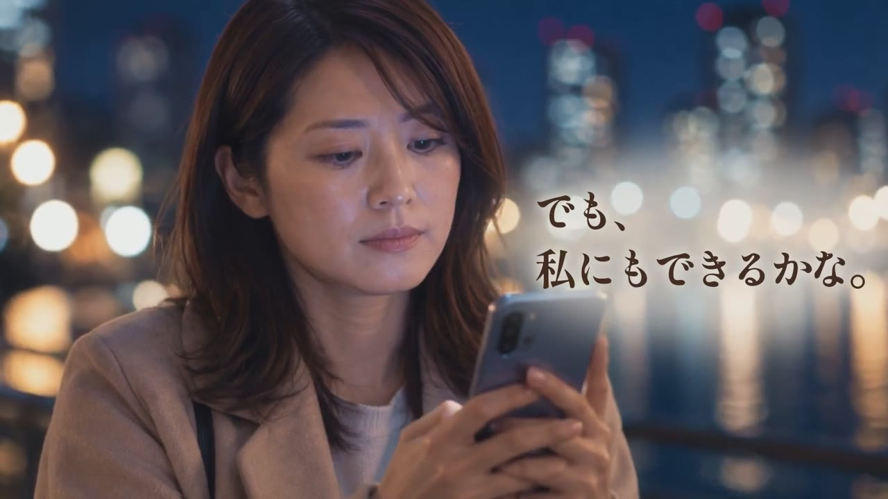
スマホを見る横顔（アップ）
スマホの画面を見つめる女性の表情アップ。
ソファでスマホを見る女性（俯瞰）
自宅のソファに寝転び、スマホを操作する女性を頭上から捉えたカット。
スマホを見る女性（顔アップ）
スマホ画面に見入る女性の表情アップ。
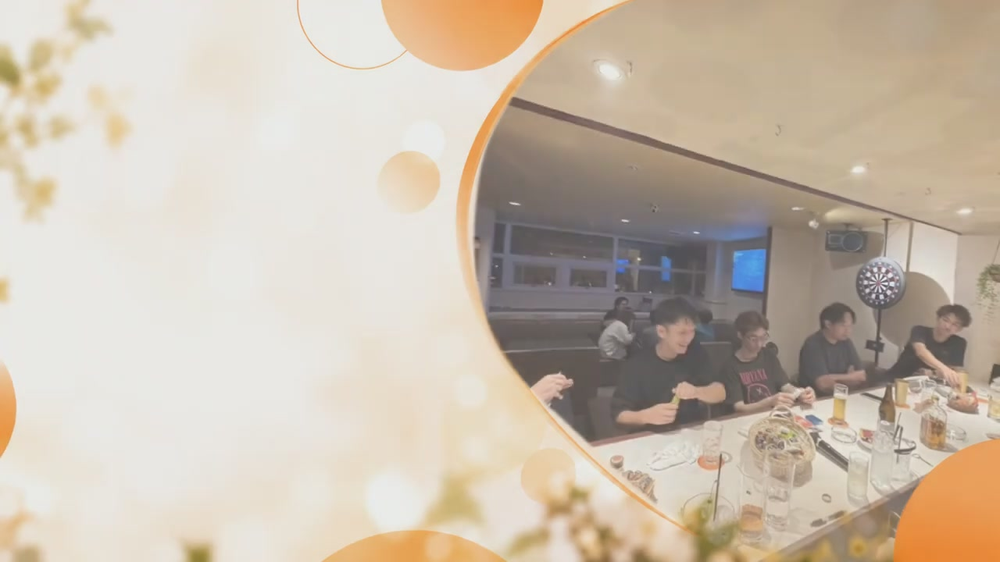
店内カットへの切り替わり（演出）
オレンジの円形フレームが開き、店内でお客様が盛り上がるカットへ切り替わる演出カット。
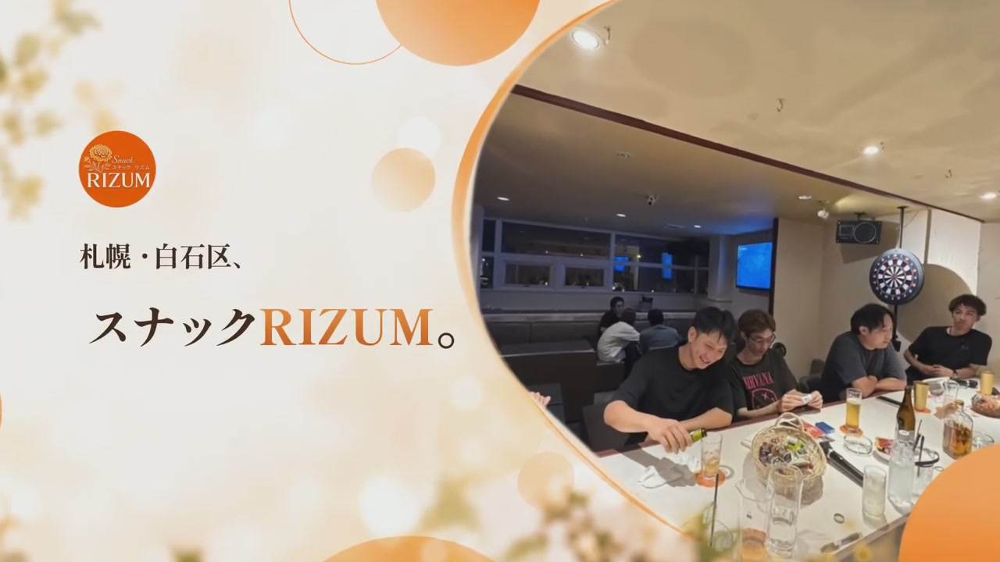
屋号・エリア紹介
店内カットとロゴを添えて、店名とエリアを紹介するカット。
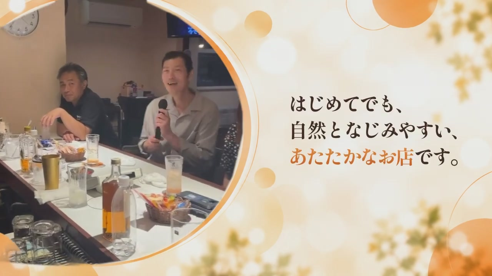
お客様との団らん
カウンター席でスタッフとお客様が談笑する様子（複数カットで展開）。
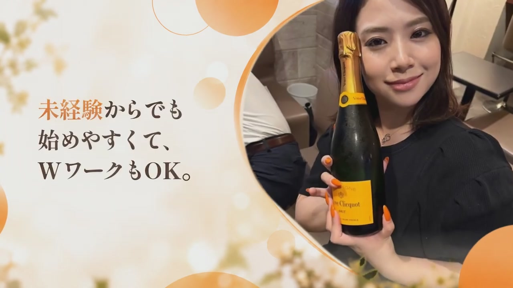
シャンパンを持つ女性スタッフ
シャンパンボトルを手に微笑む女性スタッフのアップ（複数カットで展開）。
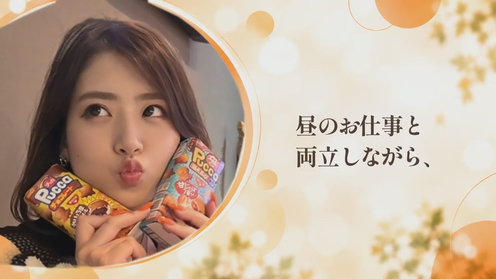
お菓子を頬に当てるスタッフ
お菓子を頬に当てておどける女性スタッフのアップ。
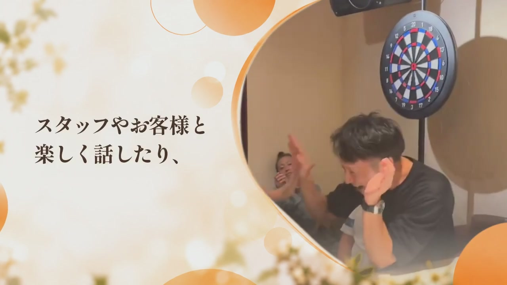
ダーツで盛り上がる様子
ダーツボード前でスタッフ・お客様が笑い合う様子。
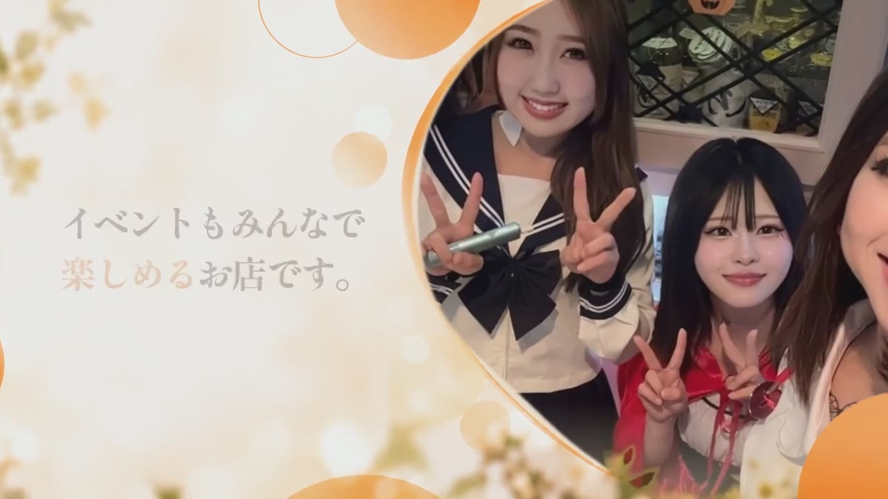
ハロウィン仮装での記念撮影
ハロウィン衣装で盛り上がるスタッフ・お客様の記念写真。
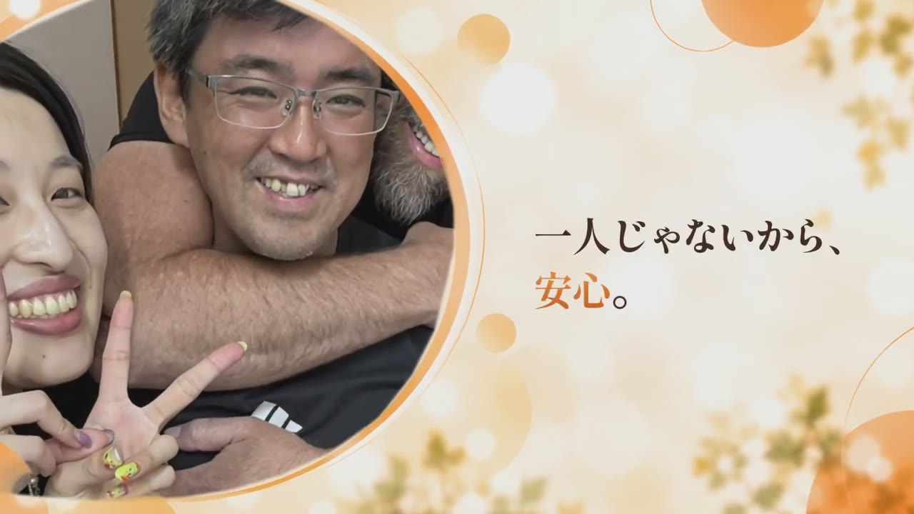
大人数での記念撮影
スタッフ・お客様入り混じっての賑やかな集合写真。
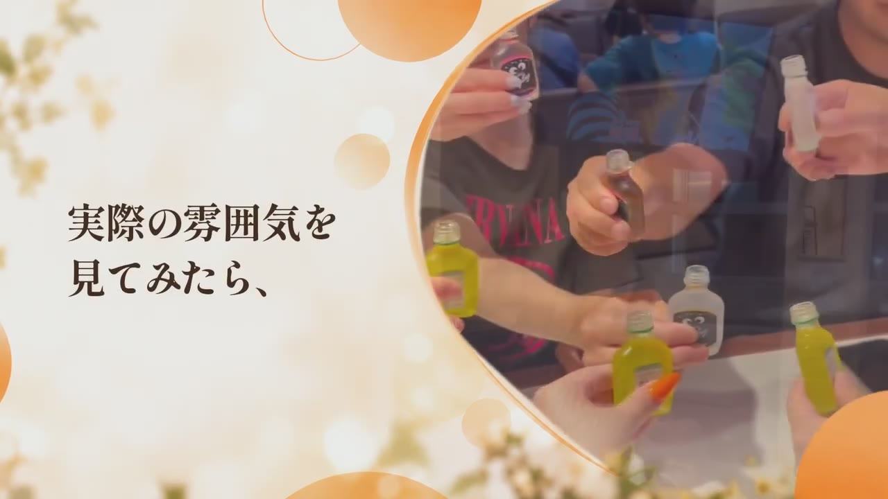
乾杯するミニボトル
テーブルを囲んでミニボトルで乾杯するお客様たち。
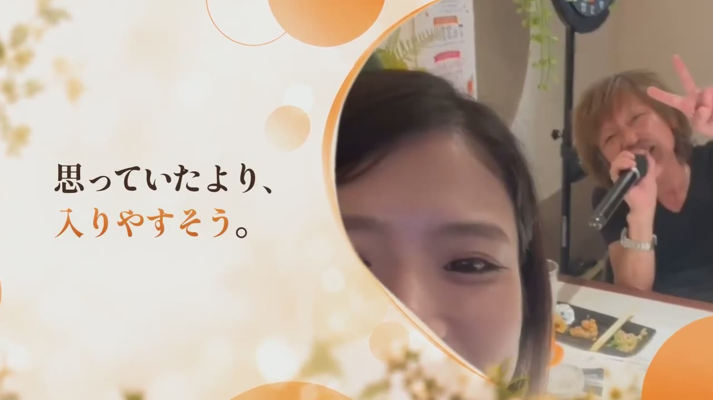
自撮りとカラオケの様子
手前で自撮りしながら、背後でカラオケを楽しむお客様。
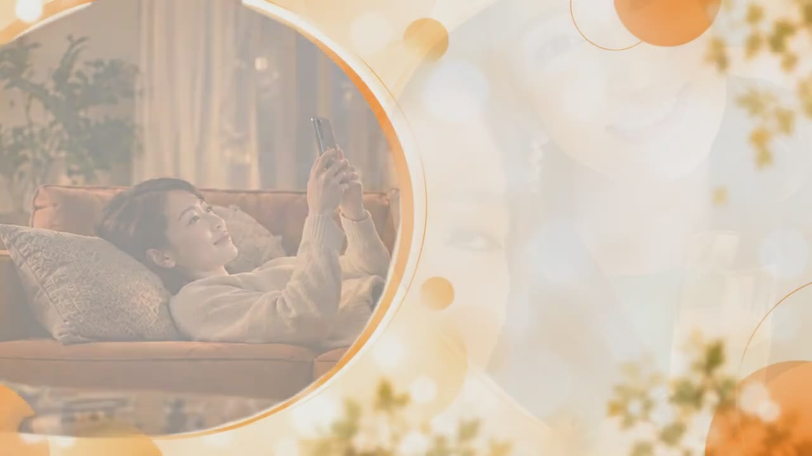
ソファのカットへフェード（演出）
自宅でスマホを見る女性のカットへフェードしていく、テロップ切り替わりのつなぎカット。
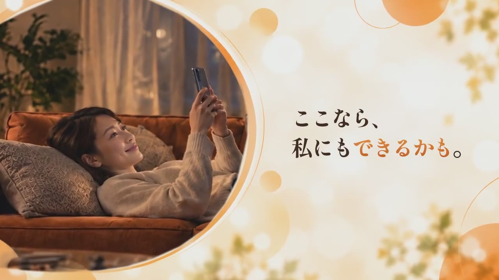
ソファでスマホを見る女性
落ち着いた表情でスマホを見る女性。
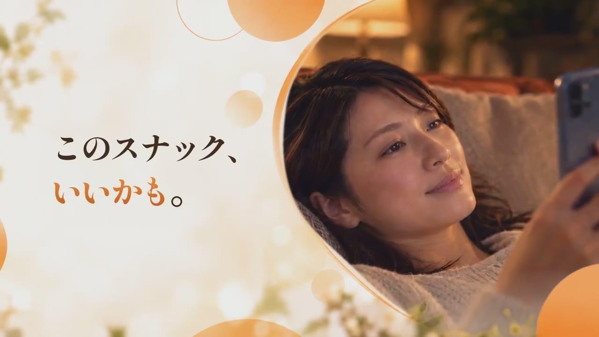
笑顔でスマホを見る女性（アップ）
微笑みながらスマホ画面を見つめる女性のアップ。
エンドカード
店舗ロゴ・「女性スタッフ募集中／未経験歓迎・Wワーク OK」の訴求と、Instagram DM案内（@rizum_snack13）。静止画のまま尺いっぱいまでホールド。